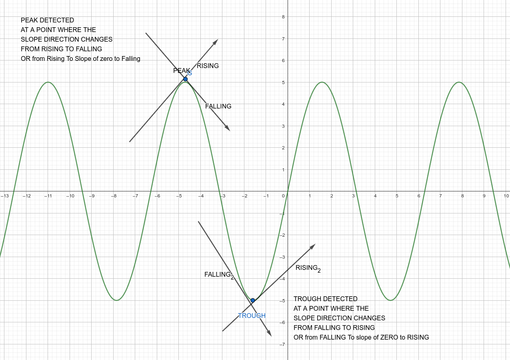
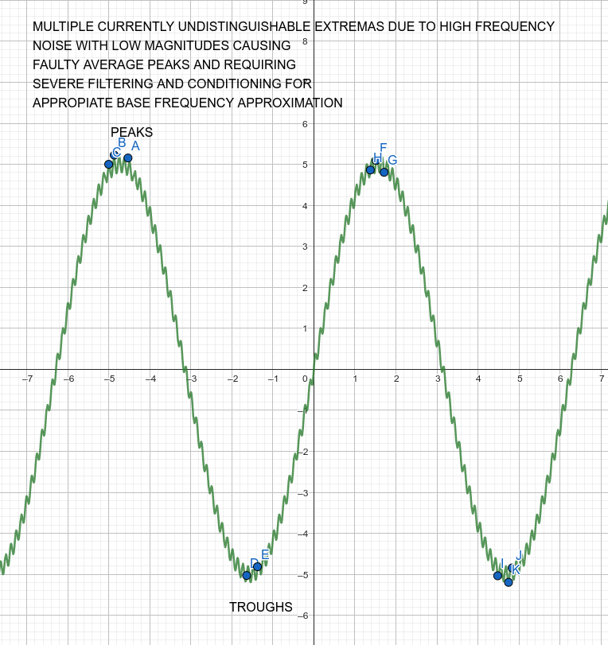
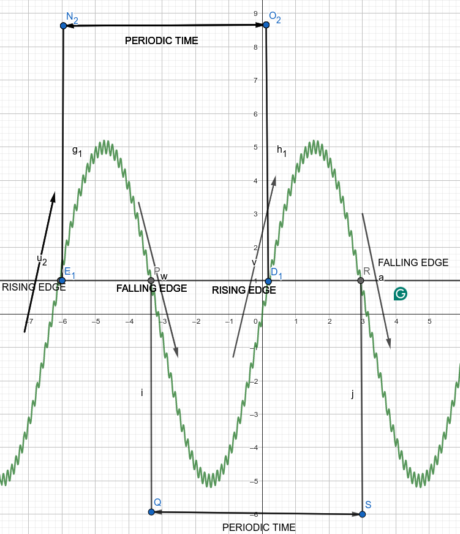
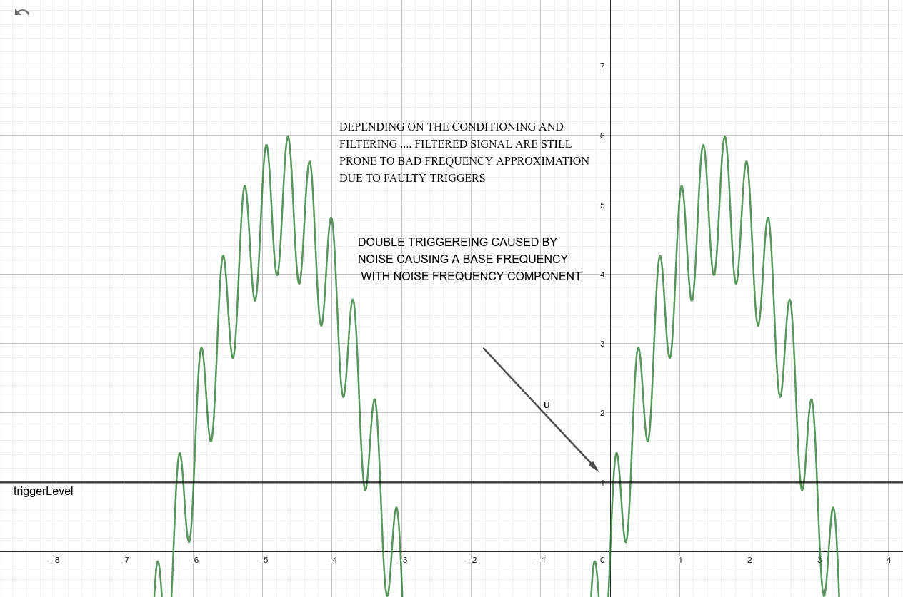
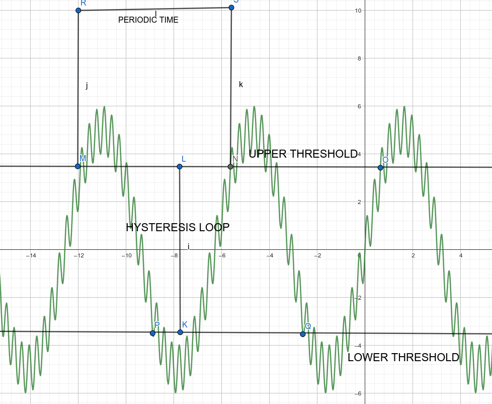

DISCRETIZED CALCULUS
- THIS PROJECT CURRENTLY uses a hyprid of eulers backward method and eulers forward method called Central difference that provides a superior accuracy local truncation error of Central difference O(h^3) second order method = better approximation local truncation error of Forward euler / Backward euler O(h^2) first order method = less supperior
Currently only support trapezoidal approximation for integrals
PEAKS DETECTION
- PEAKS and TROUGHS are mainly approximated using first derivatives Like

PERIODIC TIME CALCULATION METHODS USED
PEAK AND TROUGH
USING the extremas detected in previous steps in the analysis we can approximate frequency like this
- Store Times of Peaks detected
- Store Times of Troughs detected
- store times between consecutive peaks or consecutive troughs as the periodic time
However this method is prone to double triggering at noisy peaks as illustrated bellow

USING A SET TRIGGER LEVEL
Using the A a set Value we call the "TRIGGER LEVEL" in which when the signal crosses it in a direction like the following its time gets stored
- signal values were below TRIGGER_LEVEL value and then it gets higher than TRIGGER_LEVEL we detect that instance of change and store it in a time vector for this event (RISING EDGE)
- signal value maybe have been higher than the TRIGGER_LEVEL value and then it got lower than the TRIGGER_LEVEL we detect that instance in a time vector for this even (FALLING EDGE)
- Define periodic times as the time difference between each consecutive RISING EDGES or consecutive FALLING EDGES

- however this method is prone to noise double triggering at trigger level like the folllowing

USING TRIGGERING WITH HYSTERESIS
BY Implementing hysteresis when detecting edges double triggering due to noise could be eliminated the flow goes as following
- signal has initial state of low maybe
- signal cross the upper threshold and hysteresis block becomes high state(true state) (store that time) lets call it rising edge for now
- signal remains in high state until it crosses lower threshold and becomes low state
- once the signal alters to high again (store that time) another rising edge
- the time between each consecutive rising edges we call as periodic tim

 1.10.0
1.10.0